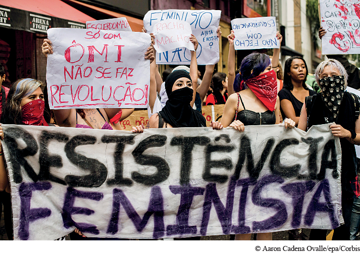

An Aspect of Brazilian FeminismProtesting macho culture and violence against women, demonstrations in São Paulo, Brazil, began in 2011, challenging the assumption that female victims of rape were responsible for those attacks because of how they dressed. Participants marched as “sluts,” wearing sexually provocative clothing, while urging the “transformation of the world by feminism.” The “slutwalk” shown here took place in São Paulo in mid-2014.(© Aaron Cadena Ovalle/epa/Corbis)